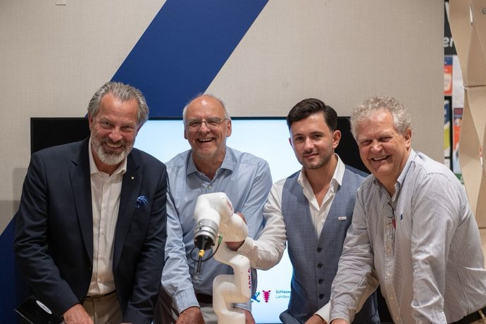
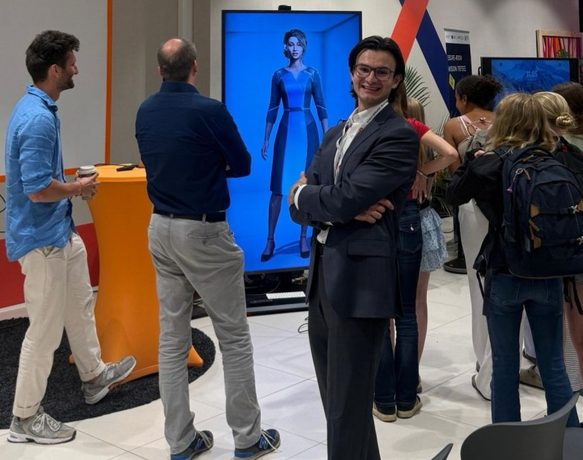
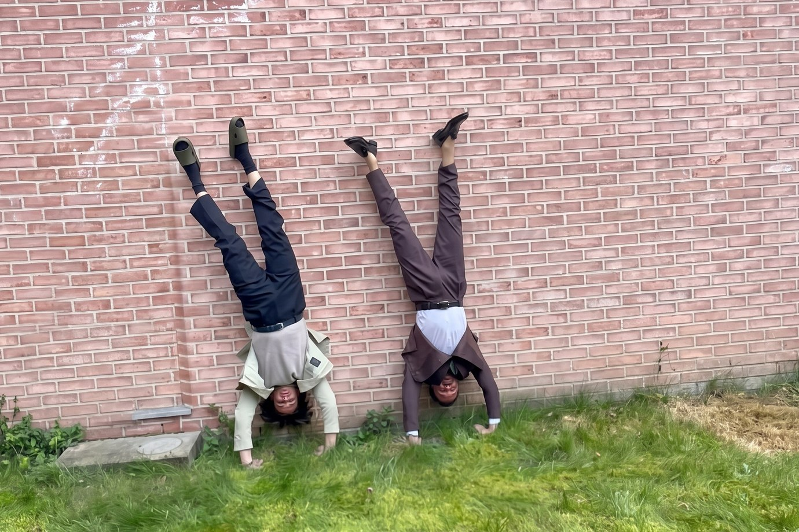

Eure neue KI. Ab heute im Einsatz.
Freitag, 07.08.2026 · 10:00 bis 12:00 Uhr · Online
Zum 01.10. geht es in die Marlesgrube.
Staatskanzlei, Sparkasse zu Lübeck und mehr.
SoulByte. Ihr seid die Ersten damit.









SoulByte ist eingerichtet, ihr wisst, wie es geht.
Bei Fragen sind Jonas und Arndt eure erste Anlaufstelle. Und wir sind nie weit weg.
EDGE Digital · Künstliche Intelligenz. Echte Wirkung.